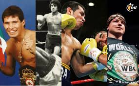

Los orígenes del boxeo se remontan a la antigüedad, donde diversas civilizaciones practicaban formas primitivas de combate. Con el paso del tiempo surgieron reglas que dieron forma al deporte moderno.
El boxeo se convirtió en una expresión cultural presente en películas, literatura, música y medios de comunicación. Su influencia ha llegado a todos los continentes, inspirando a millones de personas.
Las leyendas del boxeo son recordadas por sus habilidades, disciplina y espíritu competitivo. Sus historias continúan siendo ejemplos de perseverancia y determinación para nuevas generaciones.
